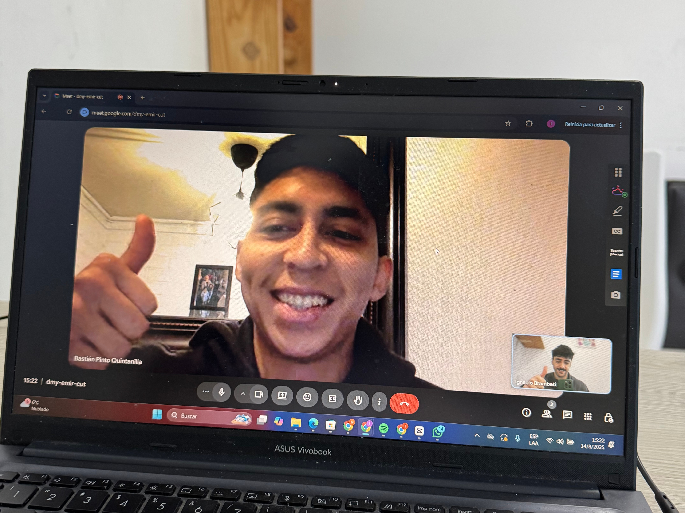
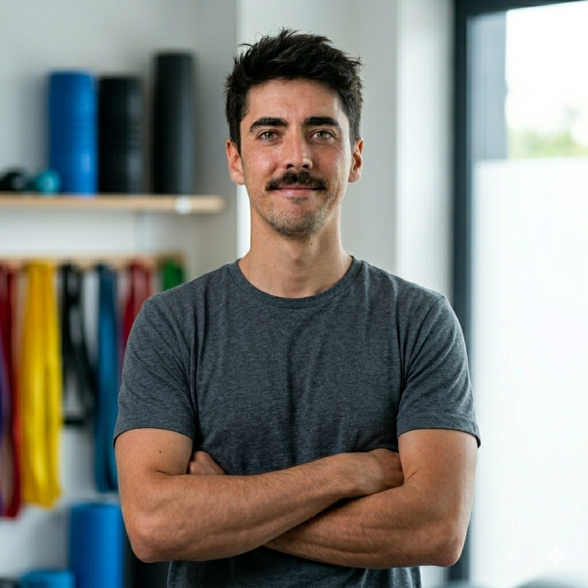
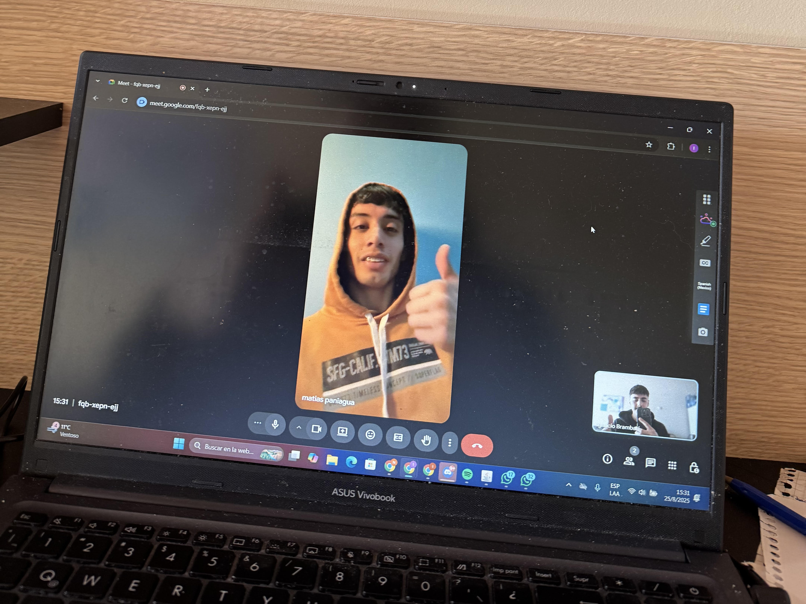
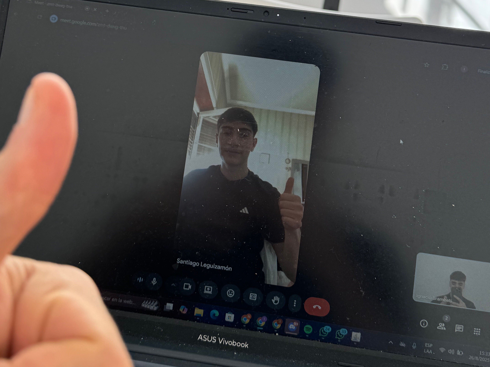

Bastian
Menisco y LCA
Tuvo lesión de Menisco y LCA. Se operó y nunca pudo volver a hacer lo que hacía antes. Luego de 5 meses de trabajo volvió a disfrutar de su deporte en un buen nivel de rendimiento.
Con el método que ayuda a deportistas a volver a nivel competitivo en menos de 1 año.
Si eres deportista, sufriste una lesión de rodilla y te interesa recuperarte para volver a jugar sin riesgo de relesión, entonces toca el botón debajo para agendar tu sesión de diagnóstico.
En esta llamada vamos a sentarnos a analizar tu caso para darte claridad en qué está fallando, el plan de acción para rehabilitarte y opcionalmente ver si podemos trabajar juntos para ayudarte a implementar ese plan.
Identifica tu situación
No sientes la confianza necesaria para volver al deporte.
Has hecho rehabilitación pero sabes que tu rodilla aún sufre riesgo de lesión.
No tienes la capacidad de recuperar tu nivel competitivo sin comprometer tu rodilla.
Tienes miedo de rendir bien y que eso te cueste más meses fuera.
La verdad sobre tu situación
Si alguno de esos problemas resuenan contigo, entonces tengo buenas noticias.
Porque ninguno de esos es el verdadero problema.
El problema es que no estás implementando una rehabilitación integral que te permita recuperarte física y mentalmente. Para así volver al deporte sin riesgo de volver a lesionarte.
Nuestro método
Hacemos un análisis 360° de tu situación actual para entender a fondo cuál sería tu mejor plan de acción.
Armamos un plan integral de 5 a 9 meses que pueda recuperar tu rodilla sin riesgo de relesión.
Tendrás acceso a mi WhatsApp + reuniones individuales + plataforma individual para maximizar tu progreso.

Conocé al especialista
Testimonios

Menisco y LCA
Tuvo lesión de Menisco y LCA. Se operó y nunca pudo volver a hacer lo que hacía antes. Luego de 5 meses de trabajo volvió a disfrutar de su deporte en un buen nivel de rendimiento.

Lesión de LCA
Nunca logró volver a jugar después de su cirugía. Tras 4 meses, abordamos sus déficits y puntos débiles y logró no sólo volver a jugar sino que recuperó su nivel de rendimiento.

Tendinopatía rotuliana y condromalacia
1 año entero sin poder hacer su deporte con normalidad y +3 años de dolor. En 5 meses de trabajo bien estructurado logró volver a jugar y disfrutar nuevamente de su deporte sin dolor.
Preguntas frecuentes
El tiempo no va a solucionar tu problema. Los tejidos necesitan carga, la rodilla tiene que ganar tolerancia al estrés y el sistema neuromuscular recuperar su capacidad; y todo eso requiere un trabajo específico.
Es una sesión de 15-20 minutos por Meet. No es una clase de gimnasia. Es una auditoría de tu situación: analizamos qué tipo de lesión tuviste, qué has hecho hasta ahora y qué te está frenando. Si vemos que podemos ayudarte, te contaremos cómo; si no, te diremos quién puede hacerlo.
Lo primero es la recuperación de la confianza. En las primeras semanas notarás una reducción de la inflamación residual y un aumento en el rango de movimiento seguro. El objetivo es que dejes de "proteger" la rodilla inconscientemente en cada movimiento cotidiano.
La fisioterapia tradicional suele quedarse en la fase de "quitar el dolor". Nosotros, además de eso, buscamos que vuelvas a sentirte bien en tus actividades y recuperes tu rendimiento físico. Unimos la rehabilitación clínica con la preparación física y el acompañamiento mental, tratando tu rodilla como la de un atleta profesional, no como la de un paciente sedentario.
No necesariamente. Podemos adaptar las fases iniciales a lo que tengas disponible, aunque a medida que progresemos hacia la fase de potencia y retorno al deporte, te guiaremos sobre el equipamiento mínimo necesario para garantizar que tu rodilla soporte el impacto real del juego.
Es tu momento
Si llegaste hasta esta parte es porque sabes que hay una forma más inteligente de rehabilitarte, buscas volver a pisar el campo con seguridad y dejar de sentir que tu rodilla es de cristal.
Las oportunidades llegan como un tren que te abre una vez la puerta para preguntarte si te subes o no. El momento perfecto no existe.
Es simple. Tienes dos caminos:
Deja de pensar en que lo verás más adelante. Estás perdiendo meses valiosos de tu carrera deportiva y, lo que es peor, estás permitiendo que el miedo se instale en tu cabeza cada vez que intentas correr o saltar. Ese tiempo de calidad en tu deporte no vuelve.
Es por eso que me gustaría invitarte a una llamada para revisar tu caso puntual, crear un plan de acción para lograr tus objetivos y opcionalmente ver si realmente puedo ayudarte.
Esto no es ninguna solución mágica ni una rutina de ejercicios de YouTube. Es una llamada sin coste donde vamos a aportar mucha claridad a tu proceso de regreso al alto rendimiento.
El objetivo es que te lleves un mapa claro de los pasos exactos que necesita tu rodilla hoy, independientemente de si decidimos trabajar juntos después o no.
Así que agenda tu llamada tocando el botón debajo.
Si estás viendo esta página es que aún quedan cupos para la llamada.
Pero como solo hay 15 al mes, pueden acabarse en cualquier momento.
Tienes que decidir. Haz click debajo.
Espero ayudarte pronto.
Reservá tu lugar
Elegí el día y horario que mejor te quede para tu sesión de diagnóstico gratuita. Solo hay 15 cupos por mes.